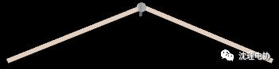
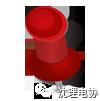

315来了
点击上方蓝字关注我们呦

某同学

你知道今天是什么日子嘛？
今天？今天是315国际消费者权益日啊，这可是我们广大消费者的节日啊！


某小编
某同学

不错不错，让我来考考你，看看你对这个特殊的日子有什么了解吧！
放马过来吧，要知道我可是上知天文下晓地理的电协小编啊！


某小编

某同学

既然你这么腻害，那你说说315是什么时候确立的呀？
那当然，是1983年国际消费者协会确立的，此后，每年3月15日，世界各地的消费者及有关组织都要举行各种活动，推动保护消费者权益运动进一步发展！


某小编

某同学

诶哟，不错呦。那你知道我国的315晚会举办了多久了么？
1991年第一届开始到现在……嗯……今年的315晚会应该是第27届315晚会了。


某小编

某同学

看来小编你对315了解的真不少呢，我还想知道近年来315晚会曝光了哪些跟科技有关的事情呢？
这个嘛，且听我慢慢道来。


某小编


2013年网易邮箱
315晚会报道：网易公司会对自己的用户进行跟踪分析，甚至包括用户非常隐私的邮件内容，以此向用户推送精准广告。
后续影响：网易股价在事件当天开盘后跌幅一度超5%，但由于“8点20”事件发酵，网易受到影响较小。
近年来，由于考拉、邮箱、游戏等业务活跃，网易股价一路走高。
2013年苹果
315晚会报道：苹果iPhone、iPad电脑等设备在国内的三包保修服务存在多项缩水问题。
后续影响：苹果根据相关要求升级了服务，但这一事件并没有对苹果产品的销量造成重要影响。
2016年饿了么
315晚会报道：饿了么平台存在诸多不规范之处，包括引导商家虚构地址、上传虚假实体照片，甚至默认无照经营的黑作坊入驻等。
后续影响：“饿了么”被曝光之后，北京通州区食药局稽查大队大队长杜伟利前往位于通州区的一家“饿了么”配餐场所进行现场检查并当场查扣相关违法设备，查封店铺。

小编有话说

315晚会以以“维护消费者合法权益、维护市场经济秩序”为宗旨，但广大消费者权益不能仅仅依靠315晚会来实现。而是需要全体经营者共同的努力来实现，希望以后的315晚会会像晚会总导演尹文曾说过的“未来315的理想状态应该是：取消315晚会。希望未来315这一天不再是个投诉日，不再是个打黑日，而是消费者的节日，消费者因自己的节日而快乐，315晚会变成真正的狂欢晚会。”

快，关注这个公众号，一起涨姿势～


编辑部——王喆